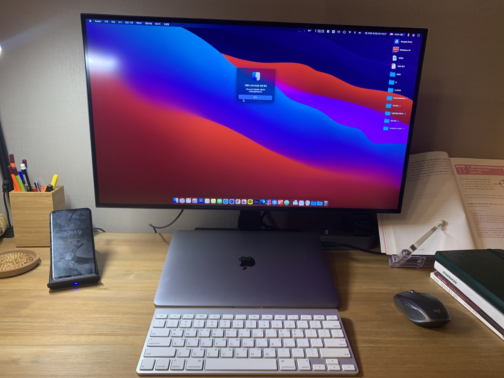

뉴스앤조이
소개
비전
기사보기
WELCOME TO NEWSNJOY
NEWSNJOY
Data Journalism Page.
This Page will be one of the greatest history of Christian Journalism of Republic of KOREA.
안녕하세요. 
저는
뉴스앤조이
최승현 기자입니다. 이 페이지를 통해 멋진 사이트를 구축하고 싶습니다.
저는 여기까지 하겠습니다. 감사합니다.